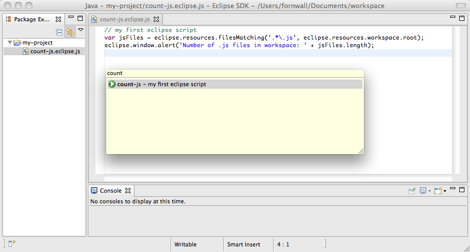

EclipseScript
About
EclipseScript is an Eclipse plug-in providing support for scripting the development environment using javascript. It provides a simple API to interact with the editor while also exposing the full Eclipse platform and plug-in system.
News
- 2016-01-12 - Version 1.0.12 released, introducing eclipse.runtime.exec() and eclipse.editors.open()
- The rhino javascript engine has also been updated, which brings in the changes made in rhino 1.7.6 and rhino 1.7.7.
Installing
Eclipse 3.6 and Java 6 or later is required. Update site URL:
Writing and running scripts
EclipseScript scripts are javascript files inside the workspace with the file extension .eclipse.js. As a start, create a new file with the name count-js.eclipse.js and put the following content in it:
To run a script, open the EclipseScript launch dialog by using the shortcut Ctrl+4 (or Cmd+4 on Mac). Start writing the name of the script and execute it by pressing return when the script is selected in the list.

Basics of scripting
Scripting is implemented using version 1.7R4 of the Rhino javascript engine. For more information on using java from Rhino, see the Rhino documentation on the subject.
Besides this general java <-> javascript bridging, the EclipseScript plug-in injects a global object with the name eclipse exposing a simplified API to interact with the Eclipse development environment. See the below documentation for the eclipse global object.
Besides using the eclipse global object scripts may access eclipse plug-in classes just as normal java code. Plug-in loading is on demand - when first accessing a class unknown to the runtime, the EclipseScript plug-in will resolve a plug-in providing the class and load it.
Example scripts
Accessing and replacing the currently selected text:
SWT may be used directly:
A plug-in such as JDT is loaded just by using a package from the plug-in:
Debug output to the console:
Operations that may take some time should be run in a background job to avoid blocking the user interface thread:
A script to post the current selection to gisthub:
Example using the java AST and the eclipse markers API:
Finally an example using the java AST to wrap method bodies in timing statements, adding statements to void myMethod() { ... } resulting in void myMethod() { long _startTime = System.currentTimeMillis(); try { ... } finally { long _stopTime = System.currentTimeMillis() - _startTime; System.out.println("Time executing MyClass#myMethod: " + _passedTime) }:
The eclipse global object
The eclipse object is a global object injected by the EclipseScript plug-in and provides a simplified API to interact with the Eclipse environment compared to accessing the API directly.
- eclipse.console.print(String message)
- Function to print a message to the console view.
- eclipse.console.println(String message)
- Function to print a message line to the console view.
- eclipse.editors.clipboard
- String property. The current clipboard text content or null if none - may both be set and read.
- eclipse.editors.document
- Read-only property. The currently selected text document or null if none. An instanceof of IDocument which most notable contains the
get() method to get the text of the document and the set(String) method to set the text.
- eclipse.editors.file
- Read-only property. The currently edited file or null if none. An instance of IFile.
- eclipse.editors.insert(String textToInsert)
- Function to insert text at the current cursor position.
- eclipse.editors.open(IFile file)
- Open the specified file in an eclipse editor..
- eclipse.editors.replaceSelection(String newText)
- Function to replace the current selection.
- eclipse.editors.selection
- Read-only property. The current text selection or null if no selection. This object is an instance of ITextSelection and contains the
text property for the text, as well as the offset, length, startLine and endLine properties. This property is read-only, use eclipse.editors.replaceSelection(String) to change the content of the current selection. Example: eclipse.window.alert('Selection is ' + eclipse.editors.selection.text + ' and starts at line ' + eclipse.editors.selection.startLine);
- eclipse.resources.currentProject
- Read-only property. The project of the current editor or null if none. An instance of IProject.
- eclipse.resources.read(Object input)
- Function returning a String resulting from reading the input, which may be an URL or an IFile.
- eclipse.resources.filesMatching(String regexp, IResource startingPoint)
- Function returning an array of IFile:s matching the regular expression and which are children of the starting point. Note that both IProject:s are IResource:s, so eclipse.resources.scriptProject and eclipse.resources.currentProject are valid starting points. Use
eclipse.resources.workspace.root as starting point to examine the whole workspace.
- eclipse.resources.scriptProject
- Read-only property. The project which the currently executing script is a part of. An instance of IProject.
- eclipse.resources.workspace
- Read-only property. The current eclipse workspace. An instance of IWorkspace.
- eclipse.runtime.include(String ... files)
- Executes one or more script files in the current context. If the path starts with a slash it is workspace-relative, so use
eclipse.runtime.include('/' + eclipse.resources.currentProject.name + '/path/to/file') to include project-absolute paths. Otherwise the path is relative to the current script, so use eclipse.runtime.include('file.js') to include a script being side-by-side with the current one.
- eclipse.runtime.die(String message)
- Function to exit the execution of the currently running script while providing a message shown to the user. An example for scripts operating on a selection would be
if (eclipse.editor.selection == null) die('Nothing is selected').
- eclipse.runtime.exec(String cmd)
- Execute the specified command in an external process.
- eclipse.runtime.exit()
- Function to exit the execution of the currently running script.
- eclipse.runtime.schedule(IJobRunnable runnable)
- Function to run a task in a background, non-ui thread. See the IJobRunnable class documentation for more info, though the example given previously should cover many use cases.
- eclipse.runtime.putGlobal(String key, Object value), eclipse.runtime.getGlobal(String key)
- Functions to manipulate global state bound to the lifetime of the whole eclipse process (that is, outliving the current script execution).
- eclipse.window.alert(String message)
- The normal javascript alert function as available in browsers.
- eclipse.window.confirm(String question)
- The normal javascript confirm function as available in browsers.
- eclipse.window.open(String url)
- The normal javascript open function to open a browser.
- eclipse.window.prompt(String message, String initialValue = "")
- The normal javascript prompt function as available in browsers.
- eclipse.xml.parse(Object input)
- Parse the input into a org.w3c.dom.Document object.
Source code
Source code is available at http://github.com/fornwall/eclipsescript/.
Feedback
Comments, ideas and bug reports can be filed at the issue tracker.